All Stories
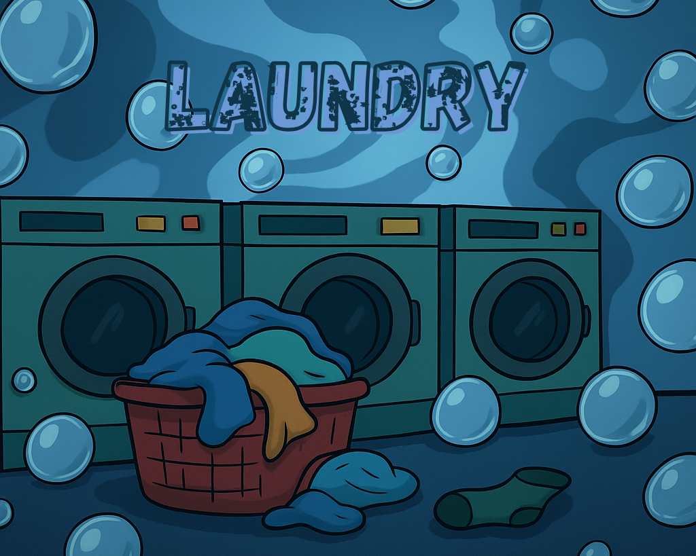
Calm meeting
Laundry, the beginning
Snack checks out the Laundromat...
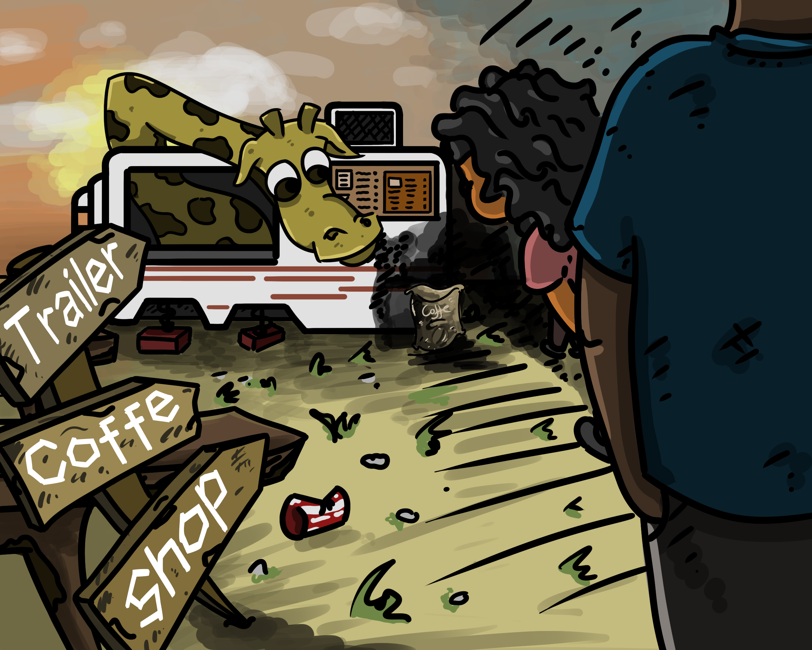
Exploration & Nature
Trailer Coffee Shop
The next meet up to a surprise place...
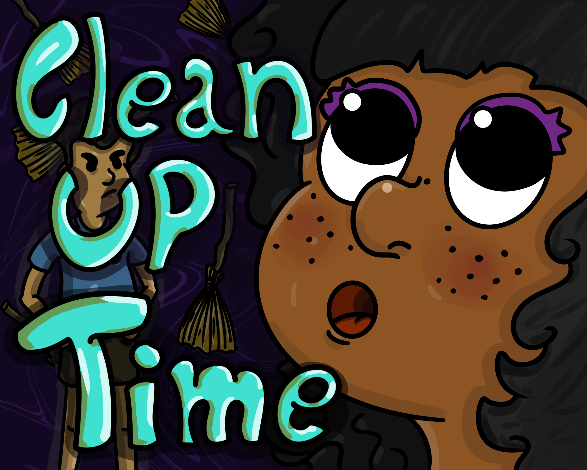
Learning & Growing
Clean up Time
Crumbs, toys, and socks everywhere...
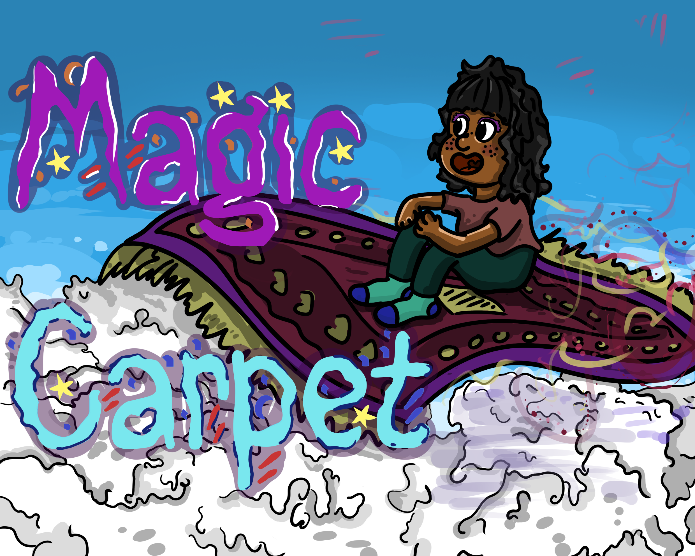
Magic, Exploration & Travel
Magic Carpet
Snack flew above puffy clouds...
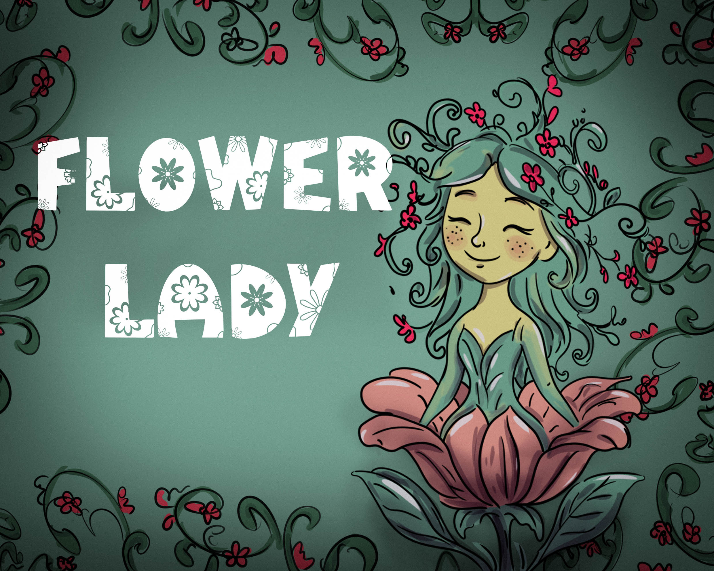
Fantasy, Nature & Animals
Flower Lady
Flower lady explores the land beyond the valley...
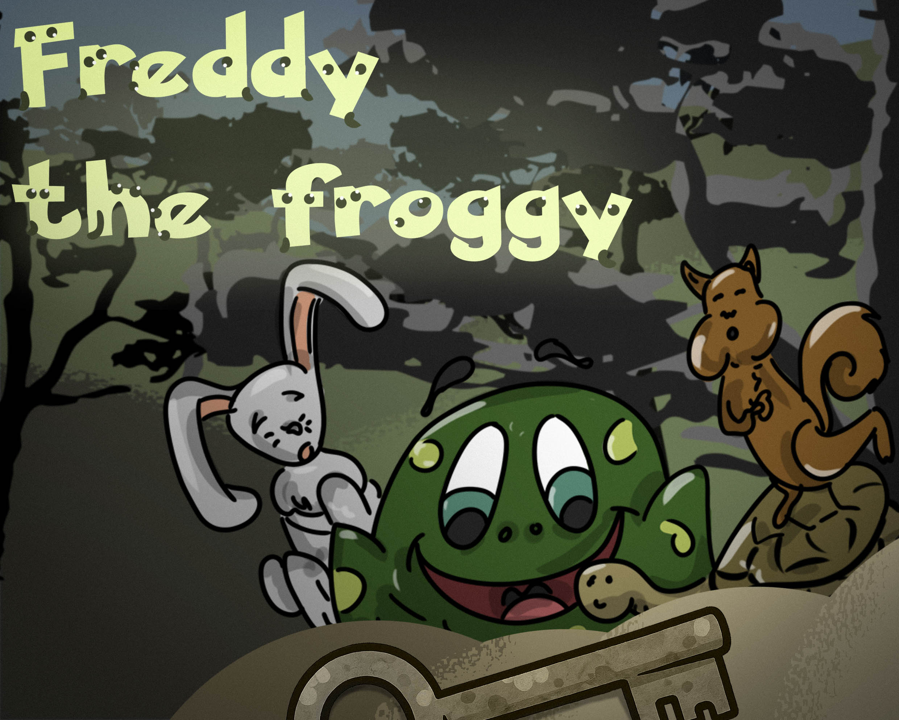
Nature & Animals, Silly & Mischief
Freddy the Froggy
Freddy the frog and his friends found an old treasure map...
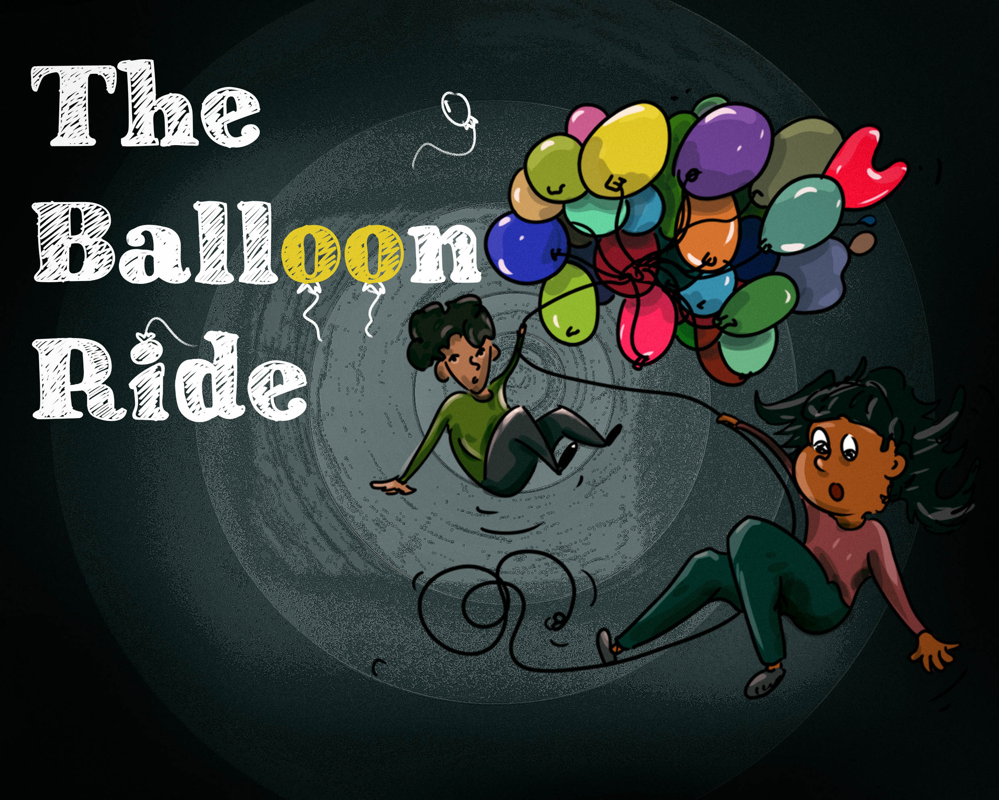
Adventure, Exploration & Travel
The Balloon Ride
Snack chasing a balloon which holds…
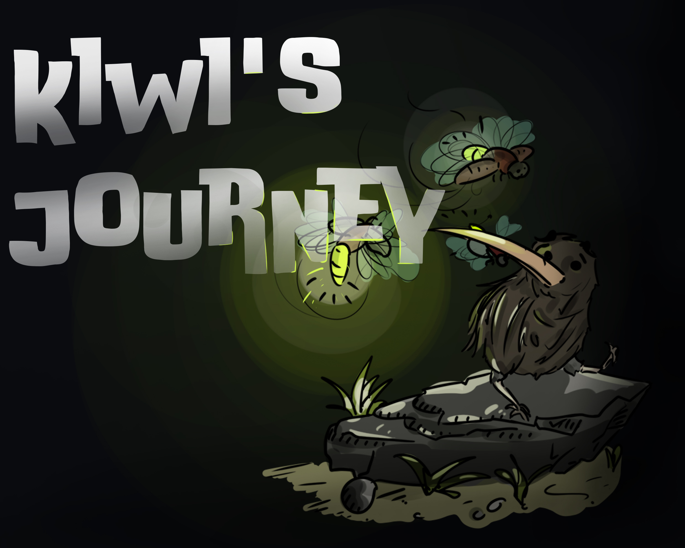
Adventure, Nature & Animals
Kiwi's Journey
Snack joins Kiwi, a curious bird, on a forest trek...
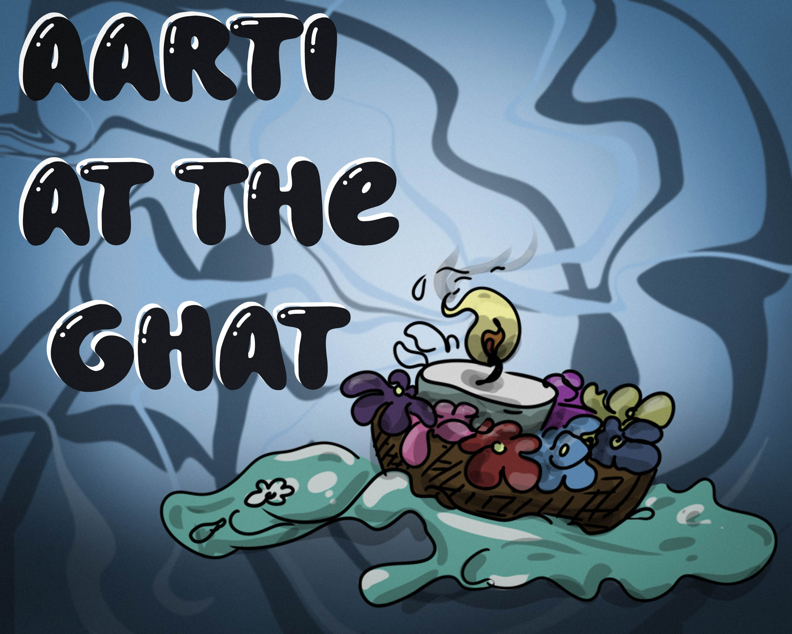
Adventure, Exploration & Travel
Aarti at the Ghat
A magical night at the Ghat...

Friendship & Feelings, Adventure
Mountain heart
Sharing a special cake in the mountains...
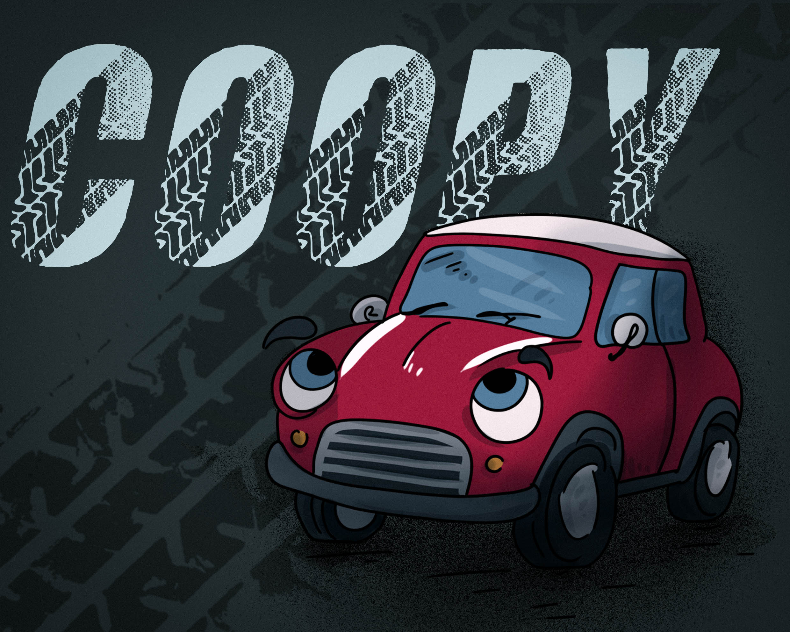
Silly & Mischief, Exploration & Travel
Coopy
Snack goes on a wild ride through colorful towns to find calmness...
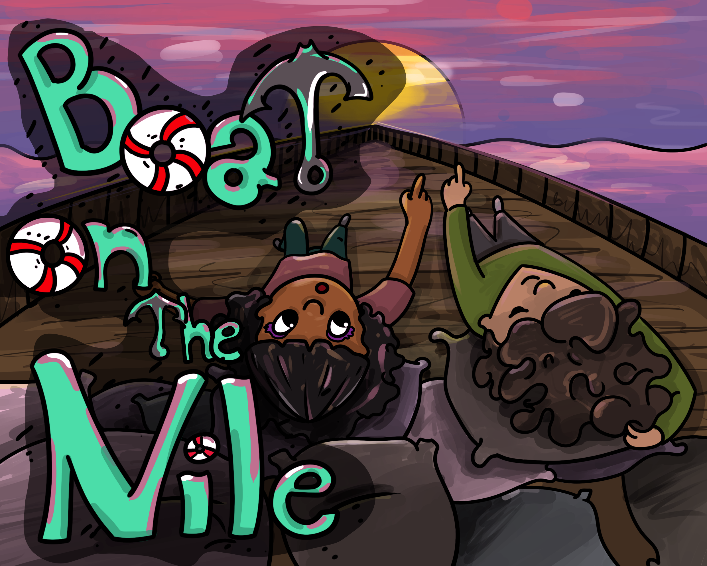
Travel & Adventure
Boat on the Nile
Floating gently down the Nile, watching fascinating...
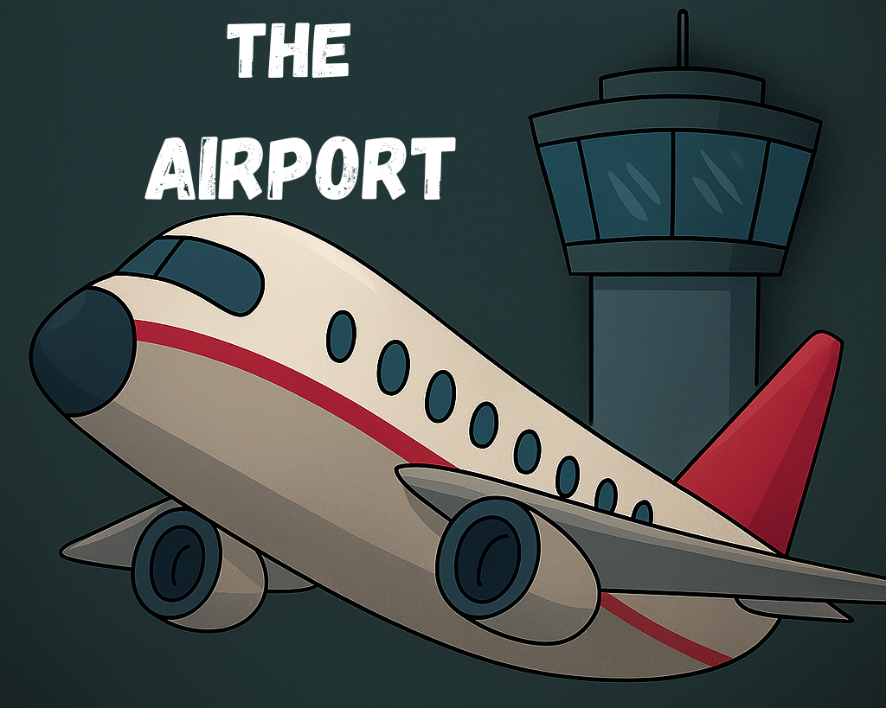
Hearts apart
Airport
Snack and Zayn say...